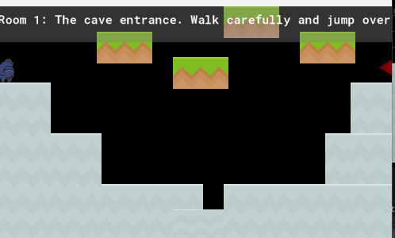
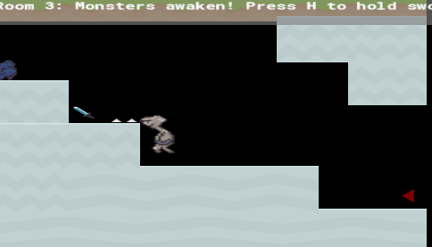

A High-Stakes Platformer Built in 5 Hours
Created on February 29th, 2026 during a 5-hour Hackathon in Kathmandu, Monster Run is a testament to quick thinking and core logic. Developed using GameMaker and custom-coded from scratch, this game challenges your reflexes and strategy.
Whether you are jumping over deadly gaps or fending off monsters with your blade, the fun never stops. There is no age limit—everyone is welcome to take the challenge!
Play Demo on itch.io
Early development screenshot of Room 1
Follow our blue hero through a treacherous cave system where the environment is as dangerous as the inhabitants.

Aadarsha Nepal & Abiral Khatiwada
Current Science Stream students at St. Xavier's College, Maitighar. Passionate about coding, game design, and rapid prototyping.
Complete all 5 levels and leave a comment on our itch.io page to be eligible for special gifts!